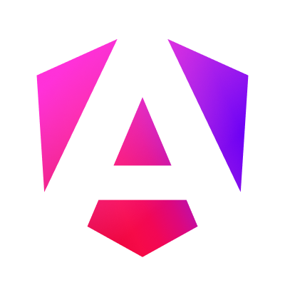
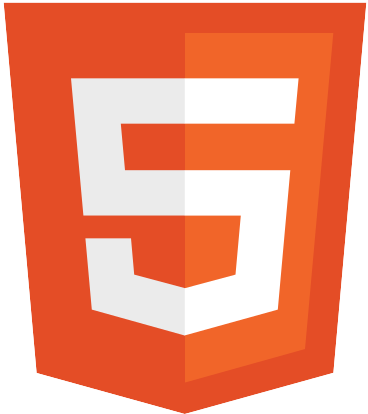
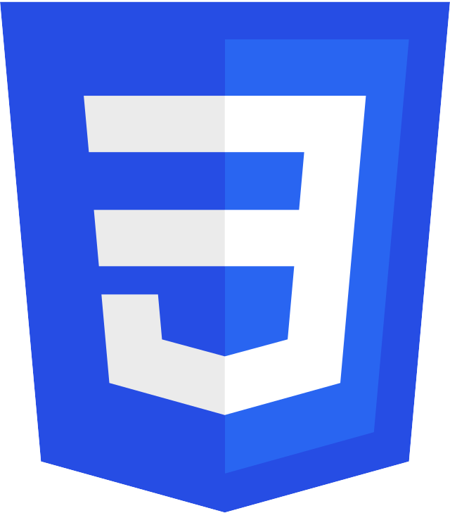
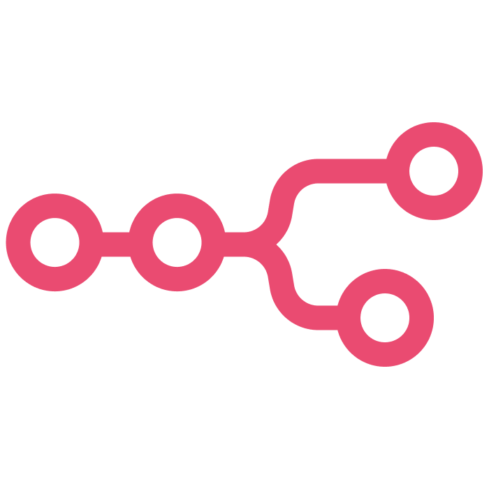

Hola, soy Francisco Pedrosa
Desarrollador de software orientado a crear soluciones digitales eficientes, mantenibles y centradas en el usuario.
Acerca de mí
Soy Técnico Universitario en Programación recientemente egresado, con una sólida formación en desarrollo de aplicaciones web y gestión de bases de datos. Me destaco por mi curiosidad constante, mi rápida capacidad de adaptación y mis ganas de crecer en el mundo IT.
Actualmente, estoy investigando soluciones de automatización basadas en inteligencia artificial para optimizar procesos y crear experiencias frontend más eficientes e innovadoras.
Fuera del código, el rugby ha sido una parte esencial de mi vida desde los 8 años. Haber liderado equipos como capitán me permitió desarrollar habilidades clave como el liderazgo, la toma de decisiones bajo presión y el trabajo colaborativo.
Busco formar parte de un equipo que valore el compromiso, la iniciativa y la mejora continua. Estoy listo para aportar, aprender y crecer en cada línea de código.
Habilidades
- Angular
 TypeScript
TypeScript Node.js
Node.js Express
Express MySQL
MySQL Java
Java C
C JavaScript
JavaScript- HTML
- CSS
 Bootstrap
Bootstrap SQL
SQL Git
Git GitHub
GitHub- Jira
 Trello
Trello Postman
Postman- n8n
Proyectos
Home Banking
Home banking con Angular, Express y MySQL. Transferencias, plazos fijos, dólares y más.
Pagina Web Club Pueyrredon
Próximamente
Automatizaciones con n8n
Flujos automáticos para integrar herramientas y ahorrar tiempo.
Contacto
Hagamos realidad tu próximo proyecto juntos.
¿Tienes alguna idea o consulta? Escríbeme, estaré encantado de ayudarte a transformar tus ideas en resultados concretos.